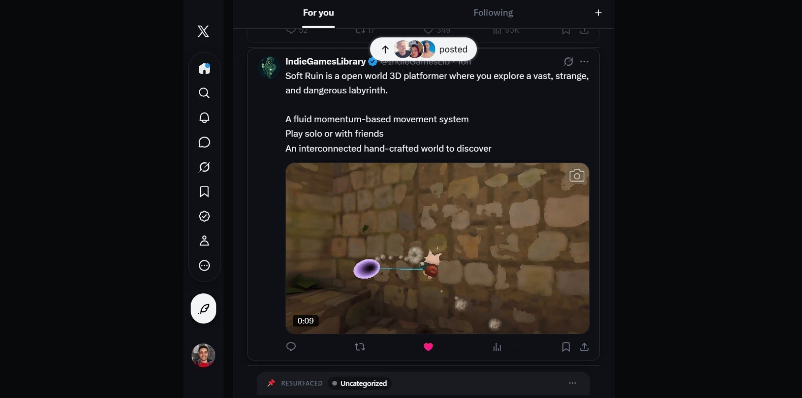
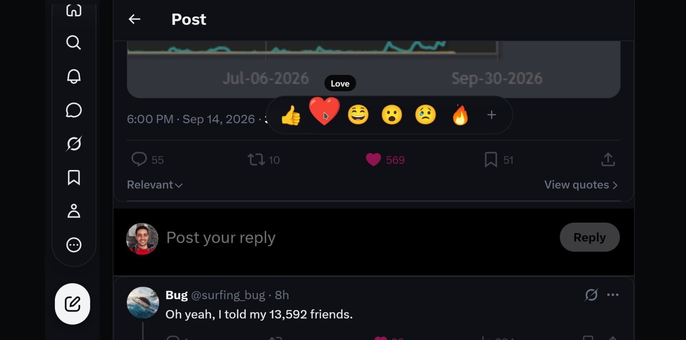
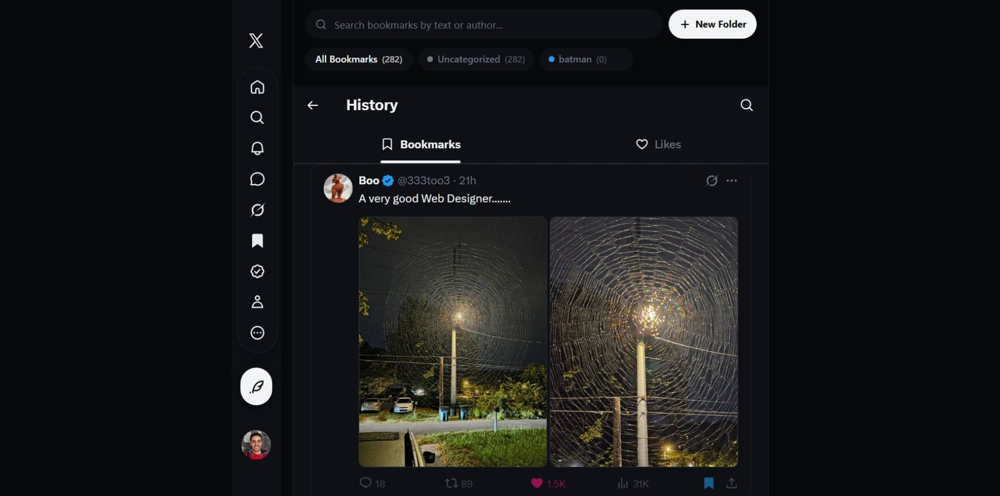
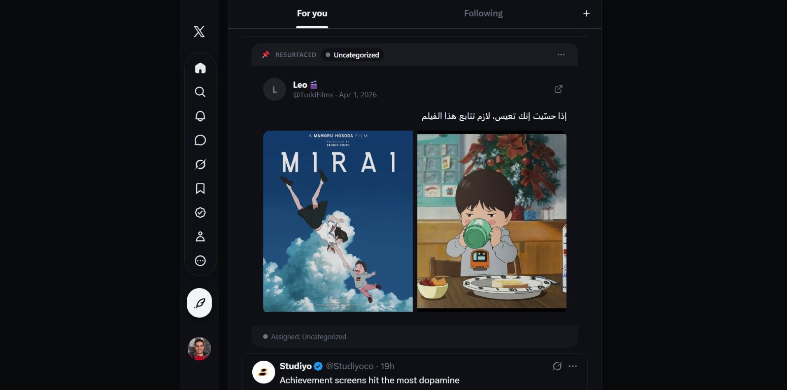

The best tools respect your attention instead of demanding more of it. Simple, calm, and quiet beats noisy every single time.
Free • Open Source • 100% Private
X without the noise.
Browse Twitter the way it was meant to be experienced. Removes sponsored posts, stops algorithmic feed switching, restores chronological tabs, and organizes saved tweets into folders. Zero tracking, zero telemetry.
✓ Blocks sponsored posts
•
✓ Chronological Following
•
✓ Bookmark folders
•
✓ 100% Private
Experience the difference
Try the interactive demo below. Toggle options on and off to see how Better Twitter transforms your feed in real time:
Block Promoted Posts
Default to Following
Hide Suggested Accounts
Hide Likes & Views
Themes:
Home
Following
For you
AD
Sponsored Ad
Upgrade your daily setup today! Sign up for our limited-time special offer and get 50% off your entire first purchase.
2
0
5
Who to follow
Vercel
@vercel
GitHub
@github
Resurfaced from your Bookmarks • Saved 2 months ago
The greatest ideas you save are lost if you never revisit them. Build a simple habit to resurface what inspires you.
Crafted for your timeline
Every feature built to respect your attention
X has become louder, slower, and packed with algorithmic clutter. Better Twitter strips the noise and adds the features power users have been asking for.
Clean Feed
Say goodbye to sponsored ads and feed clutter
Your feed shouldn't feel like a noisy billboard. Better Twitter hides sponsored posts, promoted accounts, and distracting clutter before they appear on your screen, giving you back a calm reading experience.
- ✓ Automatically hides sponsored posts, trends, and suggested accounts
- ✓ Opens straight to the accounts you actually follow
- ✓ Smooth reading with no sudden jumps or flickering

Emoji Reactions
Express yourself with one-click reactions
Why settle for just a plain heart? Hover or hold the like button to react with expressive emojis — love, laugh, think, celebrate, and care. Better Twitter prepares your reaction with one click, leaving you in total control.
- ✓ 6 expressive emoji reactions right on every post
- ✓ You remain in control — nothing is posted automatically
- ✓ Crisp, beautiful emojis that match your theme

Bookmark Folders
Organize your saved tweets into folders
Twitter's default bookmarks are easy to lose in an endless list. Better Twitter lets you organize saved tweets into custom color-coded folders so you can find great threads whenever you need them.
- ✓ Create custom folders like Design, Reading, Inspiration, or Work
- ✓ Search saved posts instantly by keyword or username
- ✓ Easily export and back up your saved tweets anytime

Smart Resurfacing
Rediscover your best bookmarks while you browse
Most bookmarks are saved once and never seen again. Better Twitter gently brings your favorite saved posts back into your feed every few tweets, so you actually get value from the great content you saved.
- ✓ Choose how often saved tweets reappear (every 5, 10, or 20 posts)
- ✓ Clear bookmark badge so you always know it's a saved post
- ✓ 100% private — your data stays on your computer and never touches outside servers

Built with privacy and trust first
Unlike extensions that ask to access everything you do online, Better Twitter keeps your browsing private:
| What We Care About | Typical Extensions | Better Twitter |
|---|---|---|
| Website Access | Can read and track every site you visit | Strictly active on x.com and twitter.com |
| Personal Data | Reads your browsing history and cookies | Never touches your cookies or history |
| Tracking & Analytics | Sends usage data to third-party ad networks | Zero tracking. No analytics. No external servers. |
| Code Transparency | Closed-source or loads unverified outside code | 100% open-source local code you can inspect |
| Account Control | Can like, post, or follow in the background | Never takes any action without your explicit click |
Ready for a better X experience?
Free, open source, and takes 30 seconds to install. No account or signup required.